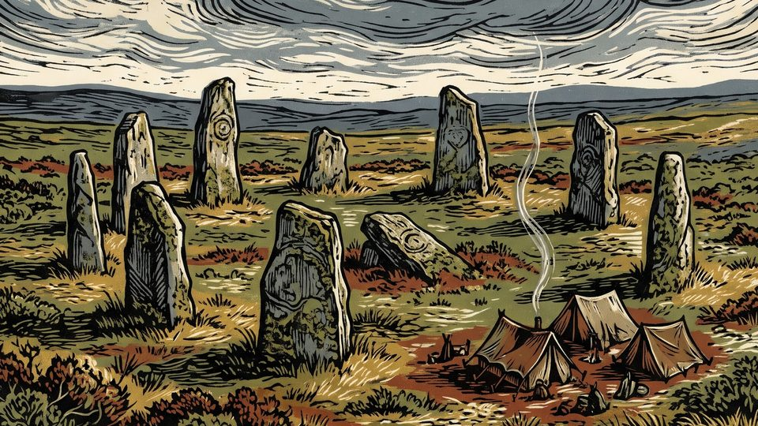
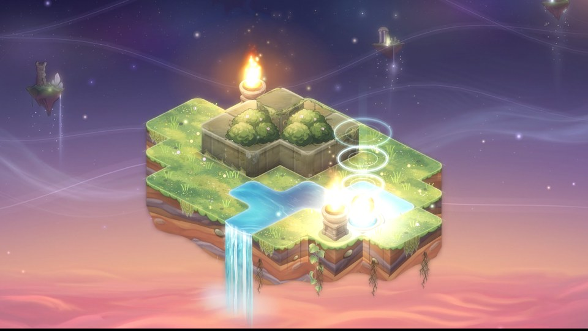
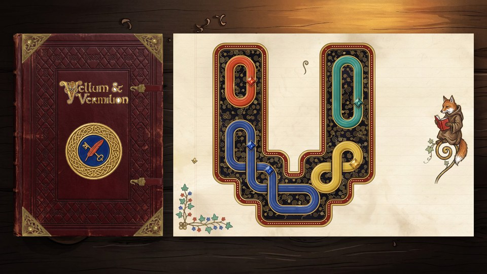
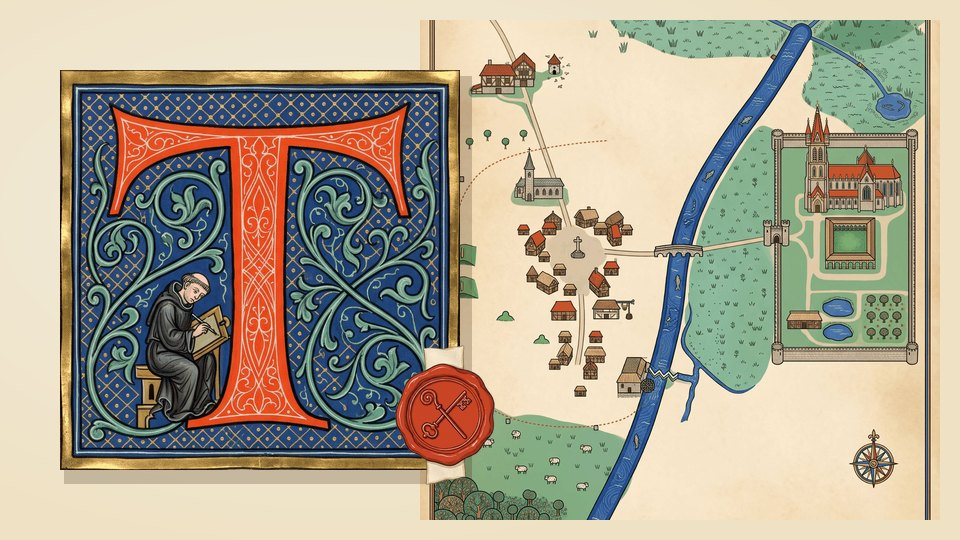
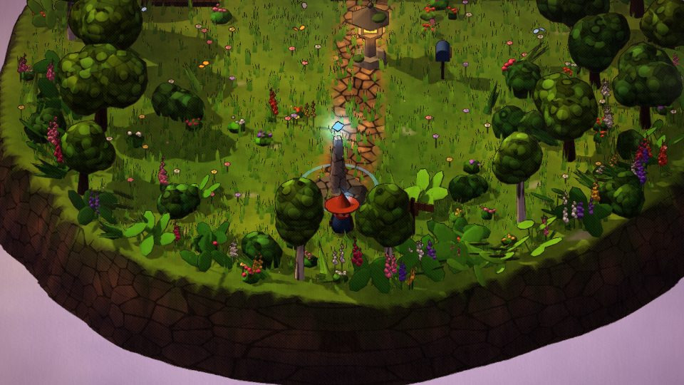
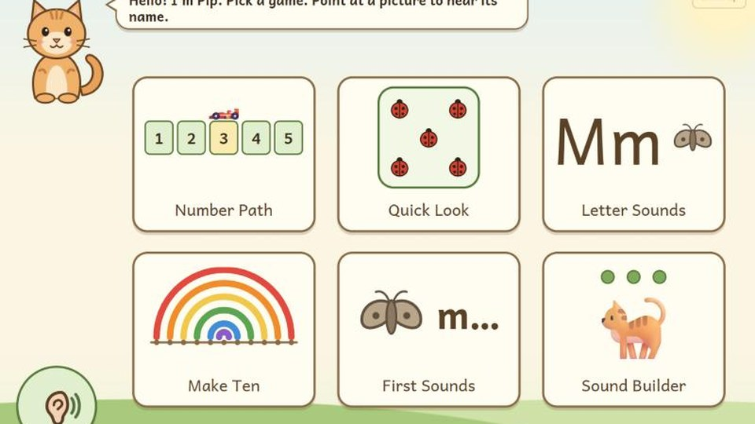
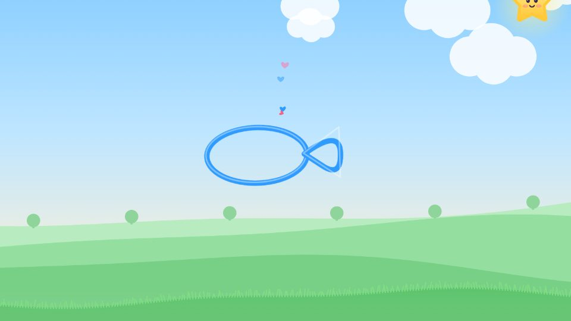

Writ & Ruin
A solo strategy game against rival houses. Each game is one age of the same realm, and the winner rewrites it for the next: new laws, ruined sites and banished residents all carry over.
Play
Quill & Sigil
Draw spell seals in a grimoire and cast them on floating islands to guide the light home. 25 lessons across three folios.
Play
Vellum & Vermilion
Turn knotwork tiles to join every ribbon into one piece and colour the pages of a medieval book. 30 puzzles in five chapters, each adding one new rule.
Play
Tithe & Tattle
Logic grid puzzles set in a fen town and its abbey in 1330. Work out who owes what, who saw what and who's lying, across six chapters of town gossip, plus the Day Book, which makes new puzzles whenever you want one, at any size and difficulty.
Play
Mistfold
A cozy isometric action RPG. The world has worn away into mist. Set keepsakes on the map to unfold their lands, then fight off the eraser tidying everything away.
Play
Acorn & Abacus
Number and letter games for a four-year-old to play with a grown-up. Six short activities, from counting along a path and making ten to hearing the first sound in a word, built on early-learning research.
Play
Doodle Wonders
Draw anything and watch it come alive. A star friend guesses what you drew and sets it walking, hopping or slithering across the hills.
Play